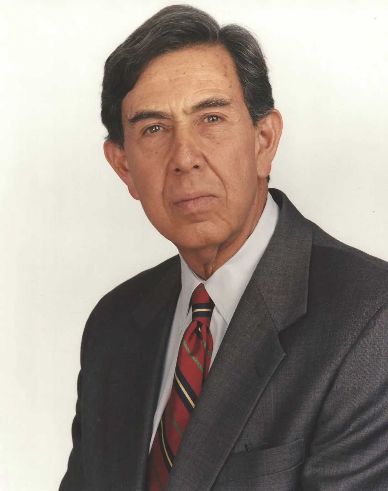

OKpolítico
OKpolíticoCuauhtémoc Cárdenas: Vida y Legado Político

El histórico político mexicano Cuauhtémoc Cárdenas falleció a los 92 años el 28 de octubre de 2026 en la Ciudad de México, tras una larga batalla contra el cáncer.
Compartir por WhatsApp▶ Ver este video en YouTube y suscríbete
Actualización 13:46 h
El histórico político mexicano Cuauhtémoc Cárdenas falleció a los 92 años el 28 de octubre de 2026 en la Ciudad de México, tras una larga batalla contra el cáncer.
Sus restos serán velados hoy en el Panteón Francés de la capital a partir de las 10 de la mañana, donde también descansó su compañera de vida, Celeste Batel. La última aparición pública del ingeniero fue en marzo de 2025, cuando se presentó en un acto conmemorativo del 87.º aniversario de la expropiación petrolera.
✉️ Recibe lo importante del día en tu correo. Suscríbete gratis →Cárdenas, quien fundó el Partido de la Revolución Democrática y fue el primer jefe de Gobierno electo de la Ciudad de México, encabezó la rebelión que rompió el dominio del PRI y abrió la puerta a la democracia.
La presidenta Claudia Sheinbaum elogió su legado como un hombre de principios firmes que transformó la vida política del país, mientras que el presidente Andrés Manuel López Obrador recordó su papel como precursor de la izquierda. Líderes internacionales, entre ellos el presidente brasileño Luiz Inácio Lula da Silva y el cubano Miguel Díaz-Canel, expresaron condolencias y resaltaron su influencia en América Latina.
El funeral se celebrará en el Panteón Francés y se espera la presencia de autoridades nacionales e internacionales, mientras la memoria de Cárdenas sigue inspirando a nuevas generaciones de políticos y activistas.【9†L13-L20}
Actualización 11:55 h
El miércoles 28 de octubre de 2026 falleció en la Ciudad de México el ingeniero Cuauhtémoc Cárdenas, dirigente de la izquierda, a causa de un cáncer que padecía, tras más de seis décadas de influencia política.
En los últimos meses había sido nombrado presidente honorario de la Comisión Consultiva del Petróleo de Pemex y participó en la conmemoración de la expropiación petrolera en marzo, sin que se anunciara un deterioro agudo de su salud.
Hijo del expresidente Lázaro Cárdenas, inició su carrera en el PRI, fundó el Frente Democrático Nacional y, tras la controvertida elección de 1988, creó el Partido de la Revolución Democrática (PRD) en 1989, convirtiéndose en figura clave de la transición democrática mexicana.
La presidenta Claudia Sheinbaum lamentó su muerte en X, describiéndolo como “un hombre de principios firmes”; el expresidente Andrés Manuel López Obrador, el PRI y la bancada del PRD también enviaron condolencias, mientras que el presidente brasileño Lula da Silva y el cubano Miguel Díaz-Canel recordaron su legado progresista.
El cuerpo fue trasladado al Panteón Francés de San Joaquín, donde se realizará un velorio privado el jueves a las 10 h; la familia pidió reserva y se anticipa que su figura seguirá siendo homenajeada en actos institucionales y académicos
Actualización 11:44 h
El miércoles 28 de octubre de 2026 murió en la Ciudad de México el ingeniero Cuauhtémoc Cárdenas Solórzano, fundador del PRD y tres veces candidato a la presidencia, a los 92 años.
Hasta sus últimos días estuvo activo en la esfera pública; en marzo de 2026 asumió la presidencia de la Comisión Consultiva del Petróleo de Pemex, cargo que ocupaba al momento de su fallecimiento.
Cárdenas se hizo conocido por su papel en la histórica contienda electoral de 1988, cuando perdió frente a Carlos Salinas de Gortari en medio de denuncias de fraude, y por fundar el Partido de la Revolución Democrática en 1989, impulsando la apertura del sistema político mexicano.
La presidenta Claudia Sheinbaum lamentó la pérdida en un mensaje en redes, calificándolo de “hombre de principios firmes” y resaltó su aporte a la transformación democrática; el presidente brasileño Luiz Inácio Lula lo describió como una “referencia para el campo progresista” en América Latina, mientras el presidente cubano Miguel Díaz-Canel elogió sus “nobles causas” y envió condolencias. El exmandatario mexicano Enrique Peña Nieto también lo recordó como figura fundamental de la transición democrática.
Los restos del ingeniero serán velados en el Panteón Francés y el sepelio será privado, solo para familiares y amigos, según informó su hijo Lázaro Cárdenas Batel, quien señaló que aún no se decide si habrá homenajes póstumos.
Actualización 10:06 h
El miércoles 28 de octubre de 2026 falleció en la Ciudad de México el ingeniero Cuauhtémoc Cárdenas Solórzano, a los 92 años, según confirmaron fuentes cercanas a su familia y medios como El Universal y la BBC.
Cárdenas había sido hospitalizado en los últimos meses por una enfermedad crónica, pero su muerte no estuvo vinculada a acontecimientos políticos recientes; su último acto público fue en marzo, acompañando a la jefa de gobierno Claudia Sheinbaum en la conmemoración de la nacionalización del petróleo.
Figura clave de la izquierda mexicana, fundó el Partido de la Revolución Democrática en 1989, fue tres veces candidato presidencial (1988, 1994 y 2000), primer jefe de Gobierno del Distrito Federal (1997-1999) y gobernador de Michoacán (1980-1986).
Tras su fallecimiento, la presidenta Claudia Sheinbaum lamentó su pérdida en X, calificándolo de “hombre de principios firmes”. El presidente Andrés Manuel López Obrador, también en X, lo describió como “un transformador”. El diputado Ricardo Monreal (Morena) y la bancada del PRI expresaron su pesar, y el exmandatario Enrique Peña Nieto lo recordó como una “figura fundamental en la transición democrática”.
El Congreso decretará luto oficial y se prevén homenajes en la Cámara de Diputados y el Senado. Su legado seguirá influyendo en la discusión sobre la democracia y la soberanía nacional en México.
Trayectoria y Formación
Cuauhtémoc Cárdenas Solórzano nació el 1 de mayo de 1934 en la Ciudad de México, de acuerdo con los registros biográficos e institucionales documentados por medios como El Universal e Infobae. Su nacimiento se produjo en el seno de una de las familias con mayor influencia en la historia política contemporánea de México,
siendo hijo del general Lázaro Cárdenas del Río, expresidente de la República, y de Amalia Solórzano Bravo. A lo largo de su vida, Cárdenas Solórzano ha presenciado y protagonizado las transformaciones institucionales más profundas del país durante el siglo XX y las primeras décadas del siglo XXI,
transitando desde la estructura hegemónica del Partido Revolucionario Institucional hasta la construcción de los cimientos de la izquierda institucional y la oposición política organizada. Su formación académica se consolidó en las aulas de la Universidad Nacional Autónoma de México,
donde cursó sus estudios superiores en la Escuela Nacional de Ingeniería, titulándose como ingeniero civil en el año de 1957. Este perfil técnico inicial marcó una etapa profesional caracterizada por el desarrollo de proyectos de infraestructura hidráulica y obras públicas de gran envergadura para el Estado mexicano,
consolidando una sólida reputación en el ámbito técnico antes de su salto definitivo a la escena política nacional y electoral. Antes de incursionar de lleno en la política electoral y en los puestos de elección popular,
Cárdenas desarrolló una intensa y prolongada carrera técnica dedicada al diseño y ejecución de obras hidráulicas estratégicas para el desarrollo nacional. Según los datos biográficos proporcionados por el Senado de la República,
en 1959 se integró formalmente al Comité de Estudios de la Cuenca del Río Balsas, una instancia fundamental para la planificación del aprovechamiento de los recursos hídricos en el centro y sur del territorio nacional.
Su capacidad técnica y liderazgo en el organismo le permitieron ascender dentro de la estructura institucional, siendo nombrado Director de Estudios de dicha comisión en el año de 1963. Posteriormente, su experiencia culminó con la coordinación directa de la construcción de la presa de La Villita, un proyecto hidroeléctrico de gran relevancia ejecutado entre 1964 y 1969.
Esta labor le otorgó un profundo conocimiento de las regiones rurales, las necesidades de las comunidades y los retos de la planeación económica regional, elementos que posteriormente moldearon su visión política y su cercanía con los sectores populares y agrarios,
particularmente en su estado adoptivo y de arraigo político, Michoacán, donde cimentó su base de apoyo institucional.
Inicios en el PRI y la Corriente Democrática
En las décadas siguientes, Cárdenas ocupó cargos de alta representación política y legislativa bajo las siglas del Partido Revolucionario Institucional, organización en la cual militó durante sus años formativos de carrera pública. Se desempeñó como senador de la República en representación del estado de Michoacán para el periodo comprendido entre 1976 y 1982, consolidando su presencia en el Poder Legislativo federal.
Posteriormente, su carrera dentro del sistema político tradicional alcanzó su máxima posición ejecutiva local al ser electo como gobernador constitucional del mismo estado de Michoacán para el periodo de 1980 a 1986. Conforme a la información detallada por los archivos de El Universal y el Senado de la República,
su administración estatal se caracterizó por una fuerte vinculación con las demandas sociales locales y una revisión de las políticas agrarias y de desarrollo regional. Sin embargo, hacia la mitad de los años 80,
el rumbo económico y político del país y del partido oficial comenzó a generar profundas divergencias ideológicas entre la cúpula gobernante y aquellos sectores que exigían un retorno a los principios nacionalistas y sociales de la Revolución Mexicana, un descontento que terminaría por fracturar la unidad monolítica del partido en el poder y daría origen a uno de los movimientos de oposición más influyentes de la historia moderna de México.
Hacia 1986, en un contexto marcado por la crisis económica, la reorientación neoliberal de la política gubernamental y las demandas de apertura democrática, Cárdenas unió fuerzas con destacadas figuras de la política nacional, entre las que sobresalían Porfirio Muñoz Ledo e Ifigenia Martínez.
Juntos impulsaron la creación de la Corriente Democrática al interior del Partido Revolucionario Institucional, un grupo crítico que exigía de manera abierta mayor transparencia en los procesos internos de selección de candidatos,
la democratización de las estructuras partidistas y un cambio radical en la línea económica del partido y del gobierno federal, según documenta Infobae. Esta corriente argumentaba que la dirección oficial del partido se estaba alejando de los principios constitucionales y de las necesidades de las mayorías trabajadoras.
La confrontación interna escaló rápidamente debido a la resistencia de la cúpula priista a permitir debates abiertos y reformas sustanciales en sus métodos de postulación. Ante la cerrazón institucional y la negativa de la dirigencia a aceptar las propuestas de democratización,
las tensiones llegaron a un punto de no retorno, lo que derivó en la salida formal de Cárdenas y de sus principales colaboradores de las filas del partido en el que habían desarrollado la mayor parte de su trayectoria institucional hasta ese momento.
El Frente Democrático Nacional y 1988
Tras su histórica salida del Partido Revolucionario Institucional, Cuauhtémoc Cárdenas encabezó en 1988 la formación del Frente Democrático Nacional, una amplia coalición integrada por diversas fuerzas políticas de izquierda, agrupaciones socialistas,
organizaciones sociales y disidencias partidistas que convergieron para disputar la Presidencia de la República. Cárdenas se postuló como candidato presidencial frente al abanderado del oficialismo, Carlos Salinas de Gortari,
en un proceso electoral que desde sus inicios capturó la atención nacional e internacional debido a la inédita fuerza que adquirió la oposición unificada. La campaña cardenista logró convocar a multitudes en plazas públicas de todo el país, desafiando la hegemonía electoral que el PRI había mantenido durante décadas consecutivas.
Sin embargo, la jornada electoral quedó marcada de manera indeleble por la polémica nacional desatada en torno al sistema de cómputo electoral y la famosa interrupción de la transmisión de los resultados oficiales,
un acontecimiento que transformó la percepción ciudadana sobre la legitimidad de los procesos electorales y movilizó a millones de mexicanos inconformes con los manejos gubernamentales de los comicios, según detalla la cobertura histórica de El Universal.
La jornada electoral celebrada el 6 de julio de 1988 dio paso inmediato a denuncias generalizadas de fraude electoral y a un profundo cuestionamiento de los resultados oficiales emitidos por la Comisión Federal Electoral. La oposición documentó numerosas irregularidades en las casillas, la alteración de actas y la opacidad en el manejo de los paquetes electorales,
lo que desató una movilización ciudadana sin precedentes en la historia contemporánea de México. Este acontecimiento se convirtió en el catalizador fundamental para la posterior transformación del sistema electoral mexicano,
obligando a las autoridades a emprender reformas profundas orientadas a garantizar la autonomía de los órganos encargados de organizar los comicios y la equidad en la contienda. De acuerdo con los registros periodísticos de Infobae,
el conflicto poselectoral de 1988 no solo reconfiguró el mapa político nacional al evidenciar el agotamiento del sistema de partido hegemonizado, sino que también sentó las bases organizativas para la creación de una nueva alternativa política que agruparía de manera permanente a las distintas expresiones de la izquierda democrática mexicana en los años venideros.
Fundación del PRD y Nuevas Candidaturas
Como resultado directo de la convergencia de las fuerzas políticas que habían participado en el Frente Democrático Nacional y los diversos movimientos sociales y de izquierda que operaban en el país, el 26 de mayo de 1989 se fundó formalmente el Partido de la Revolución Democrática.
Esta nueva organización política buscaba dotar a la oposición de izquierda de una estructura institucional permanente y unificada que permitiera canalizar las demandas ciudadanas de justicia social, democracia y soberanía nacional. Cuauhtémoc Cárdenas asumió la presidencia fundacional del partido, cargo que desempeñó hasta 1993,
liderando el proceso de consolidación territorial y la creación de comités en todo el país, según constata la documentación histórica de El Universal y La Jornada. Durante su gestión al frente del partido, el PRD enfrentó complejos retos organizativos,
la represión y hostigamiento contra sus militantes en diversas regiones del país, y la necesidad de construir una plataforma programática coherente que respondiera a las transformaciones económicas globales y a las exigencias de democratización interna de sus propios integrantes,
consolidándose rápidamente como la principal fuerza de oposición institucional. Con la estructura del Partido de la Revolución Democrática consolidada, Cárdenas contendió nuevamente por la Presidencia de la República en los procesos electorales de 1994 y del año 2000.
En los comicios de 1994, celebrados bajo nuevas reglas electorales y con la participación de diversos contendientes, resultó ganador el candidato del PRI, Ernesto Zedillo,
en un proceso marcado por la compleja coyuntura política y social del país tras el levantamiento zapatista y los acontecimientos violentos de ese año. Posteriormente, en el año 2000, Cárdenas participó por tercera ocasión en la contienda presidencial, abanderando en esta ocasión a la coalición Alianza por México,
integrada por el PRD y otras fuerzas políticas aliadas, enfrentándose en las urnas al candidato del Partido Acción Nacional, Vicente Fox, quien finalmente resultó vencedor, poniendo fin a más de siete décadas de gobiernos priistas ininterrumpidos en la Presidencia de la República,
conforme a los archivos históricos de El Universal.
Jefatura de Gobierno del Distrito Federal
Uno de los momentos electorales más significativos en la carrera política de Cuauhtémoc Cárdenas ocurrió en el año de 1997, cuando ganó la elección para convertirse en el primer Jefe de Gobierno del Distrito Federal electo por la ciudadanía mediante el voto directo.
Hasta ese momento histórico, los titulares del ejecutivo de la capital del país eran designados directamente por el presidente de la república. Cárdenas desempeñó este cargo desde 1997 hasta 1999, año en el que solicitó licencia para separarse del puesto y enfocar sus esfuerzos en su tercera campaña presidencial.
Su gestión al frente de la administración capitalina se desarrolló en un marco institucional inédito, donde tuvo que coordinarse con una Asamblea de Representantes plural y con un gobierno federal encabezado por el Partido Revolucionario Institucional,
demostrando capacidad de negociación política y gobernabilidad en el principal centro urbano y político de la nación, de acuerdo con los registros del Senado de la República y los archivos de La Jornada.
La gestión de Cárdenas al frente de la capital del país marcó un hito fundamental en la descentralización política y administrativa de la Ciudad de México, al abrir por primera vez la titularidad del Ejecutivo local a la oposición institucional y dotar a los habitantes de la capital de plenos derechos políticos para elegir a sus gobernantes.
Durante su administración se implementaron programas sociales orientados a sectores vulnerables, se abrieron espacios de participación ciudadana en las delegaciones políticas y se establecieron las bases para la gobernabilidad democrática en una metrópoli caracterizada por su alta complejidad social y económica.
Diversas crónicas periodísticas señalan que este periodo demostró la viabilidad de administraciones de oposición en el ejercicio del poder ejecutivo local, sirviendo como plataforma de validación para el partido y consolidando el bastión político que definiría el rumbo electoral de la capital durante las siguientes dos décadas,
transformando de manera definitiva el mapa político de México.
Contraste y Costos de la Lucha Democrática
Mientras que los discursos institucionales, las narrativas partidistas y las versiones oficiales han destacado reiteradamente la transición pacífica y el establecimiento paulatino de instituciones electorales autónomas como los principales logros de la transición democrática mexicana,
organizaciones sociales, activistas y registros hemerográficos documentan costos humanos y sociales muy significativos durante las movilizaciones políticas y las protestas poselectorales. La disputa por el sufragio efectivo y la defensa del voto ciudadano no estuvieron exentas de confrontaciones y episodios de violencia en diversas regiones del país,
donde militantes y simpatizantes de la oposición enfrentaron agresiones y persecuciones en su lucha por abrir espacios de participación democrática frente al sistema político hegemónico, evidenciando las tensiones profundas que caracterizaron el proceso de apertura del régimen.
Fuentes periodísticas e informes presentados por académicos e investigadores en homenajes organizados en instituciones como la Universidad Nacional Autónoma de México, y documentados por medios como La Jornada y Milenio,
recordaron públicamente que la lucha por la democratización del país desde los comicios de 1988 estuvo acompañada por un saldo doloroso de víctimas. Informes y discursos conmemorativos señalaron que el proceso de oposición y protesta social costó entre 600 y más de 800 muertos en distintas jornadas violentas registradas a lo largo del país.
Estas cifras y testimonios contrastan frontalmente con la narrativa institucional que suele presentar la transición política mexicana como un proceso exclusivamente terso, pacífico y negociado exclusivamente en las cúpulas partidistas,
recordando que la construcción de las libertades democráticas y los cauces electorales actuales se edificó sobre el sacrificio de numerosos militantes y ciudadanos que participaron en las movilizaciones de resistencia civil.
Reconocimientos y Legado Institucional
En reconocimiento a su trayectoria pública, su defensa de los principios democráticos y su contribución a la transformación institucional de México, el Senado de la República le otorgó en el año 2011 la Medalla Belisario Domínguez,
la máxima condecoración que otorga el Estado mexicano a sus ciudadanos más eminentes. En los archivos oficiales del recinto legislativo consta que el galardón reconoció su papel histórico en la apertura del sistema político,
su congruencia en la lucha por la legalidad electoral y su incansable participación en la vida pública del país. A lo largo de la ceremonia de entrega y en diversos pronunciamientos institucionales,
se destacó que la figura de Cárdenas ha permanecido como un referente ético y político indispensable para comprender la evolución del régimen democrático contemporáneo, siendo respetado incluso por actores de distintas fuerzas políticas debido a su trayectoria de congruencia y su apego a los principios republicanos y nacionalistas que marcaron su acción de Estado.
A lo largo de su longeva vida pública, Cuauhtémoc Cárdenas ha mantenido una activa participación en los debates nacionales sobre temas fundamentales para el desarrollo del país,
tales como la conducción de la economía nacional, la defensa de la soberanía en materia energética, la necesidad de reformas institucionales profundas y la vigencia de los derechos sociales.
Sus intervenciones públicas han incluido tanto la emisión de opiniones críticas ante diversas administraciones federales como la formulación de propuestas orientadas a replantear las políticas públicas en sectores estratégicos. Las coberturas periodísticas de medios como El Universal han documentado puntualmente estas participaciones, subrayando que su voz continúa siendo consultada y valorada en el análisis político nacional.
Su legado se proyecta así no solo como el testimonio de un opositor histórico que desafió el orden establecido, sino como el de un constructor de instituciones que ayudó a moldear el rostro político, plural y competitivo del México moderno.
Actualización 21:34 h
El 28 de octubre de 2026 falleció Cuauhtémoc Cárdenas Solórzano, exjefe de Gobierno del Distrito Federal y fundador del Partido de la Revolución Democrática (PRD), a los 92 años en la Ciudad de México, según informó El Universal.
Ingeniero civil, Cárdenas fue una figura clave de la transición democrática: encabezó la primera administración local electa tras el fin del dominio del PRI en 1997 y se postuló a la presidencia en 1988, 1994 y 2000, obteniendo importantes votos de la oposición.
Su trayectoria vinculó a generaciones de políticos de izquierda, entre ellos su hijo, el senador Ricardo Cárdenas, y líderes como Andrés Manuel López Obrador, quien en 2005 fundó Morena tras la escisión del PRD.
Tras el anuncio, el presidente Andrés Manuel López Obrador expresó su pesar y destacó a Cárdenas como “un pionero de la democracia mexicana”. El presidente del PRD, Jesús Zambrano, también rindió homenaje, señalando su legado institucional y la necesidad de continuar su proyecto político.
Los restos del político serán velados en la Capilla de los Héroes en la Ciudad de México, y se prevé una ceremonia oficial el 30 de octubre. Su fallecimiento reaviva el debate sobre la reinvención del PRD y la influencia de la familia Cárdenas en la agenda progresista del país.
Sigue viendo
Con información de
El Universal · Infobae (México) · Senado de la República · La Jornada · Milenio · BBC Mundo · El Universal (confirmación) · DW · El Universal (Peña Nieto) · Infobae · El Universal (internacionales) · El Universal (sepulcro) · El Financiero · CNN Español